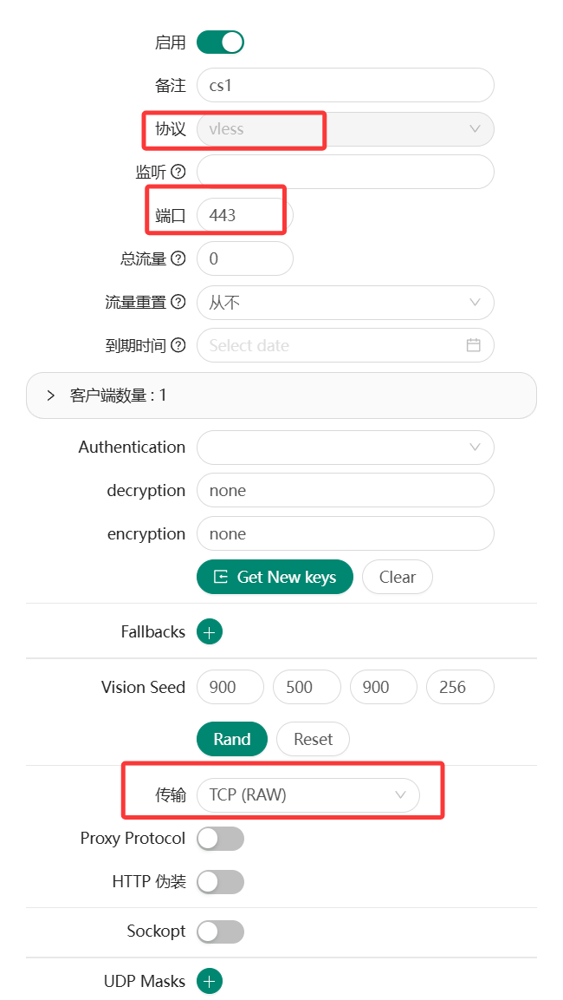
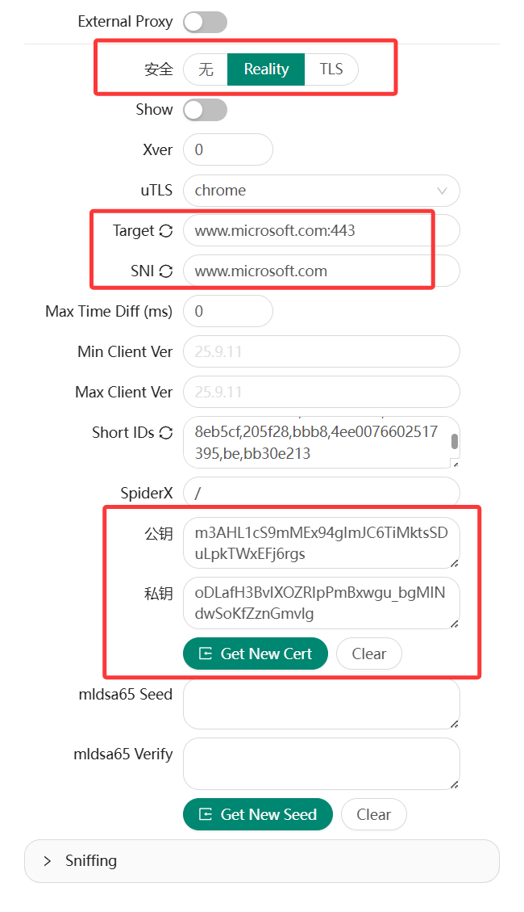
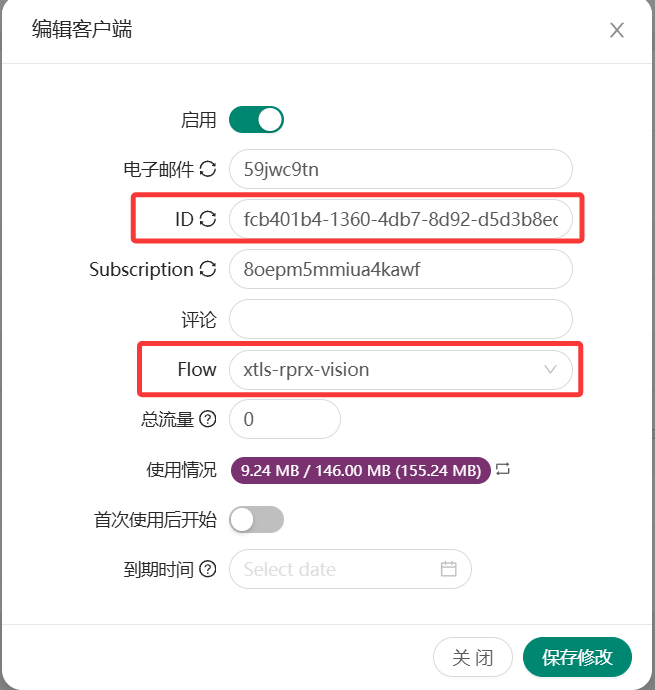
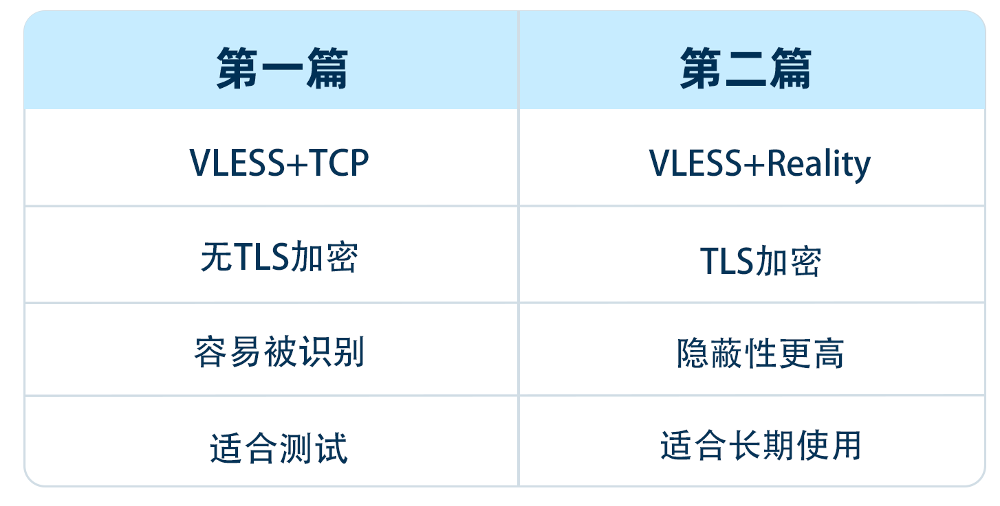

🕓2026年03月16日
视频教程：▶https://youtu.be/6AWVEsNvxrE?si=_Ao9L2WHQS4Y6hD4
在上一篇教程中，我们已经完成了 3X-UI 面板的基础部署，并成功创建了一个简单的节点：
VLESS + TCP（无加密）
这种配置主要用于测试服务器环境是否正常，但如果用于长期使用，其隐蔽性和安全性都比较有限。
因此在这一篇教程中，我们将把节点升级到目前更加稳定和隐蔽的方案：
VLESS + TCP + XTLS + Reality
这种方案具有几个明显优势：
底层依然基于
Xray
只是使用了更先进的传输机制。
一、Reality 是什么
很多教程都会直接讲如何配置 Reality，但很少解释它的原理。
简单来说：
Reality 是一种 TLS 流量伪装技术。
它的核心思想是：
让你的网络流量在外部看起来像是在访问一个真实网站。
例如：
复制 https://www.microsoft.com
在网络层面上，Reality 的握手过程看起来就像是一次正常的 HTTPS 连接。
但实际上：
这种方式可以让流量更加自然，从而提高隐蔽性。
二、在 3X-UI 中创建 Reality 节点
首先登录 3X-UI 面板。
进入：
入站 → 新建入站
1、基本设置
配置如下：

为什么推荐使用 443 端口？
因为 443 是 HTTPS 的标准端口，大部分网络环境都会允许该端口的通信。
2、安全设置

ServerName
建议填写真实存在的大型网站，例如：
复制 www.microsoft.com
复制 www.cloudflare.com
复制 www.apple.com
这些网站的 TLS 特征更加稳定。
3、传输设置
Flow 设置为：
复制 xtls-rprx-vision
这是 Reality 推荐的流控模式，能够获得更好的性能表现。

三、客户端配置示例（Clash）
官方客户端配置：点此进入>>
如果你使用 Clash 客户端，可以使用类似如下的节点配置：
复制
proxies:
- name: "vless-reality-vision"
type: vless
server: 你的服务器IP
port: 443
uuid: 你的UUID
network: tcp
tls: true
udp: true
flow: xtls-rprx-vision
servername: www.microsoft.com # REALITY servername
reality-opts:
public-key: 你的PublicKey
short-id: 你的ShortID
support-x25519mlkem768: false # 如果服务端支持可手动设置为true
client-fingerprint: chrome # cannot be empty
需要特别注意以下几点：
1、server 填写服务器 IP
2、servername 必须与服务端 ServerName 一致
3、public-key 必须复制服务端生成的密钥
另外建议设置：
复制 client-fingerprint: chrome
这样流量特征会更接近真实浏览器。
四、为什么 Reality 不需要域名和 SSL 证书？
传统 TLS 的连接流程是：
客户端 → 服务器
服务器需要：
而 Reality 的逻辑不同。
Reality 使用的是一对自生成密钥。
在握手过程中：
因此 Reality 不需要：
我们可以直接使用：
复制 服务器IP + 443端口
就可以建立 TLS 加密连接。
这也是 Reality 最大的优势之一。
五、测速显示 -1 的排查方法
很多人在配置 Reality 时都会遇到一个问题：
测速显示 -1。
这通常意味着连接没有建立成功。
可以按照以下顺序排查。
1、检查端口监听
执行：
复制 ss -tulnp | grep 443
如果没有看到监听信息，说明服务没有启动成功。
2、检查防火墙
如果服务器启用了防火墙，需要放行 443 端口：
复制 iptables -I INPUT -p tcp --dport 443 -j ACCEPT
复制
TCP 443
否则外部无法访问服务器。
4、检查服务器时间
Reality 对时间同步要求比较严格。
执行：
复制 timedatectl
如果服务器时间和本地时间差距过大，也可能导致握手失败。
六、Reality 与第一期配置的区别
我们简单对比一下两种配置。

因此只要 Reality 能正常连接，建议优先使用 Reality。
七、常见问题 FAQ
Q1：没有域名真的安全吗？
可以。
Reality 并不依赖你拥有域名，它只是借用公开网站的 TLS 特征。
Q2：ServerName 可以随便填写吗？
不可以。
必须填写真实存在的网站，例如：
www.microsoft.com
www.apple.com
www.cloudflare.com
Q3：为什么连接后立即断开？
最常见原因有三个：
八、总结
在第一期教程中，我们解决的问题是：
节点能否正常使用。
而在第二期教程中，我们完成了进一步升级：
如果 Reality 已经成功运行，那么你的节点部署已经达到了一个比较成熟的水平。
下一篇预告
在第三期教程中，我们将继续升级部署方案：
这也是完整的进阶部署架构。
如果你已经跑通 Reality，可以继续阅读第三期教程。
视频中用到的服务器：
六六云服务器：https://kjxl.cc/666clouds（双ISP，支持tiktok）
全站九折优惠：XL666
年付七折优惠：year30off
LightNode 服务器：https://kjxl.cc/LightNode（按流量计费）
Vultr 服务器：https://kjxl.cc/vultr （按时计费，最低5$/月。）